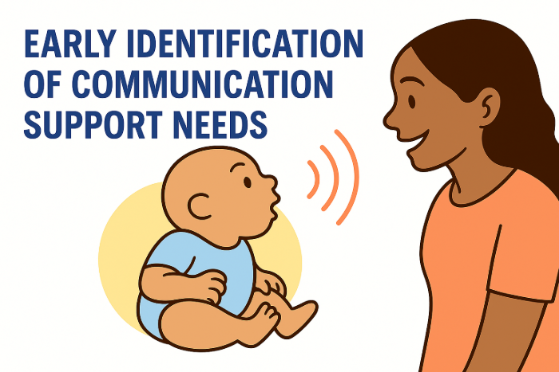
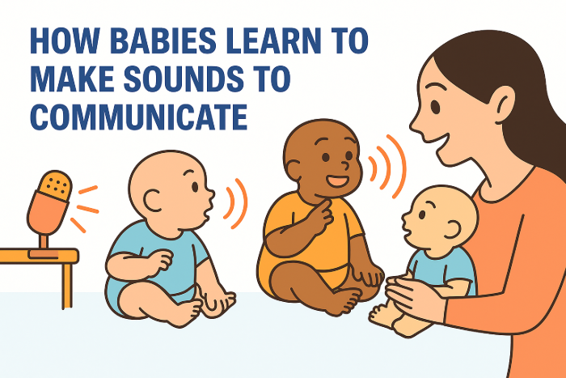
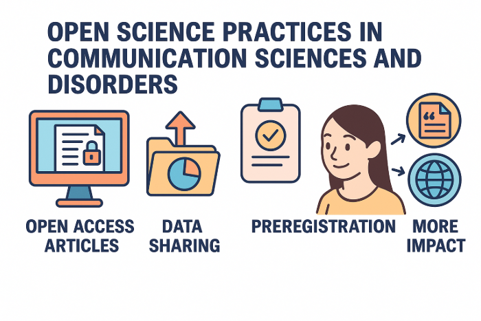

Research Topics
Early identification of communication impairments in young children
Cerebral palsy and speech motor involvement
My research aims to improve how we recognize speech difficulties early in children with cerebral palsy (CP). Many children with CP experience challenges with speech, but these are often identified too late to take full advantage of early intervention. By studying how infants with CP or those at risk begin to use sounds and babble, we are learning to spot early differences in how their speech develops. This work is helping us understand which early vocal patterns might signal later speech difficulties. Ultimately, the goal is to develop better tools to identify speech problems sooner, so children with CP can get the support they need as early as possible.
Autism and other neurodevelopmental disabilities
This area of my research explores how early vocalizations and sounds that babies make before they start using real words can help us identify children who may develop communication differences. I have worked with different research groups studying infants at risk for language disorders with neurodevelopmental conditions and risk factors like preterm birth, tuberous sclerosis complex, and autism. By closely examining the kinds of sounds these babies make at home and in the lab, we’ve found that they often babble less and start making clear speech-like sounds later than typically developing infants. These early differences in vocal behavior may serve as important clues to future challenges with language and social communication. This research is helping to lay the groundwork for earlier identification and support for children who may benefit from early intervention.

Evolutionary origins of language in humans
My doctoral research explored how babies learn to make sounds to communicate, focusing on both social and non-social reasons for why they vocalize. By studying recordings of infants at home and in the lab, we found that babies often make sounds on their own, not just to interact with others. These self-directed vocalizations are actually more common than social ones, but babies tend to use more advanced sounds when they’re interacting with caregivers. Although vocal imitation is rare, it seems to be meaningful when it happens. This work shows that speech development is shaped by both a child’s own curiosity alongside their interactions with people around them, which highlights the importance of encouraging both kinds of vocal experiences early on.

Open science in communication sciences and disorders
This line of my research focuses on how open science practices, such as making research articles freely available, sharing data, and registering studies in advance, can help improve the accessibility and impact of research in communication sciences and disorders (CSD). While these practices are gaining attention in other scientific fields, they are still not widely used in our field. Through national surveys and journal analyses, we found that many researchers in CSD are unfamiliar with open science methods, especially preregistration and open access publishing, and use them infrequently. However, most researchers are eager to learn more and want to adopt these practices. We also found that when research is made freely available, it is cited more often by other scientists and receives more public attention online. This work highlights the importance of reducing barriers to open science and providing better support for researchers to share their work in ways that are more accessible to both professionals and the public.
